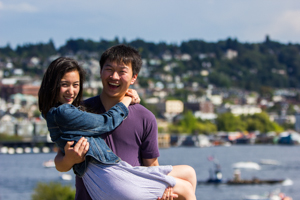

My name is Roger and I am currently a student at Stanford University pursuing a major in computer science with a focus on human computer interaction. I am a firm believer that design focused on humans has the potential to disrupt the way we see and interact with computers. Through design and technology, I hope to allow people to gain greater understanding of the world around them.
I enjoy doing photography in my free time.
Sports

Stanford v USC 2013.11.16

Stanford v Oregon 2013.11.7
People
Skydiving 2013.08.03

Seattle 2013.08.10